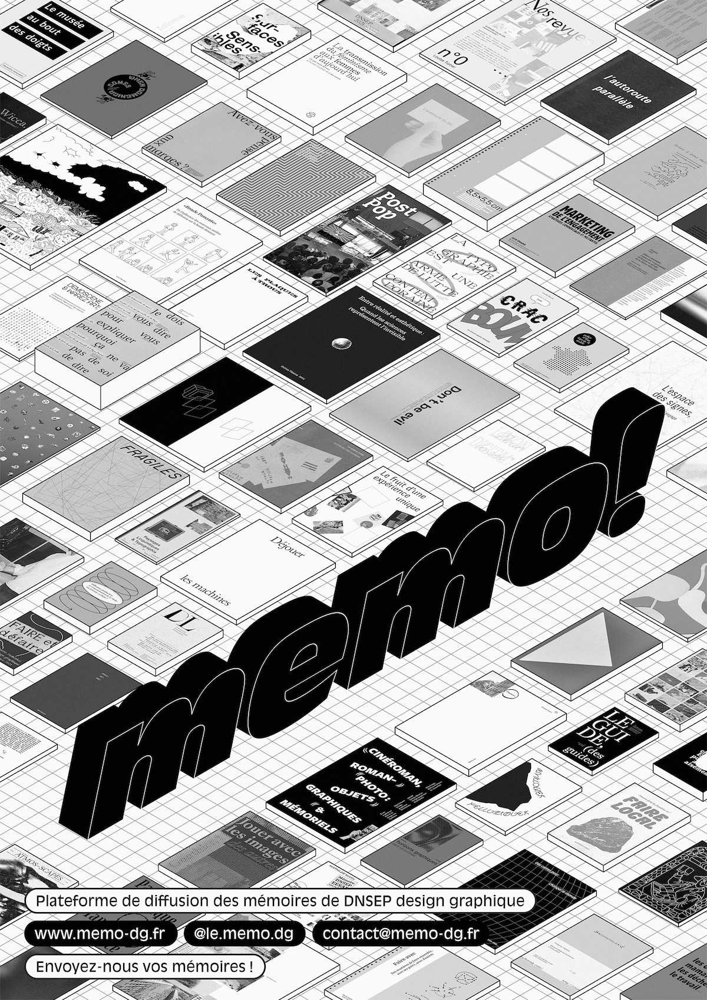
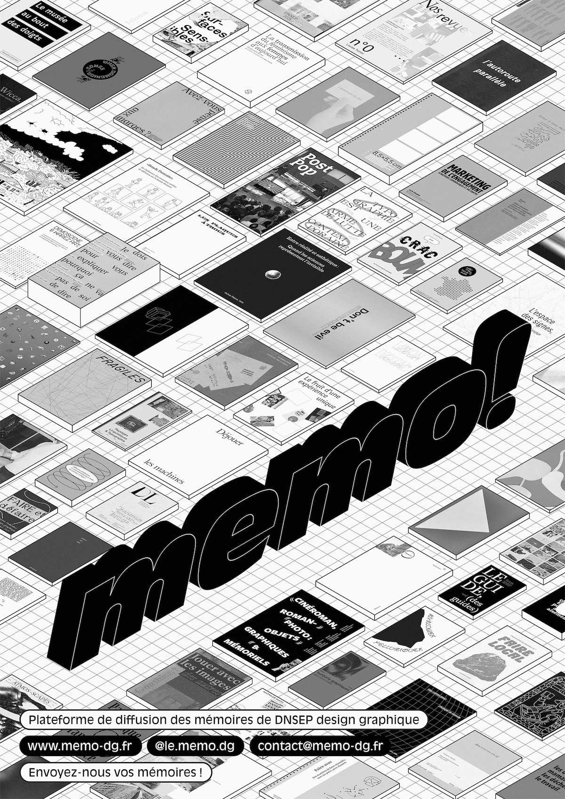
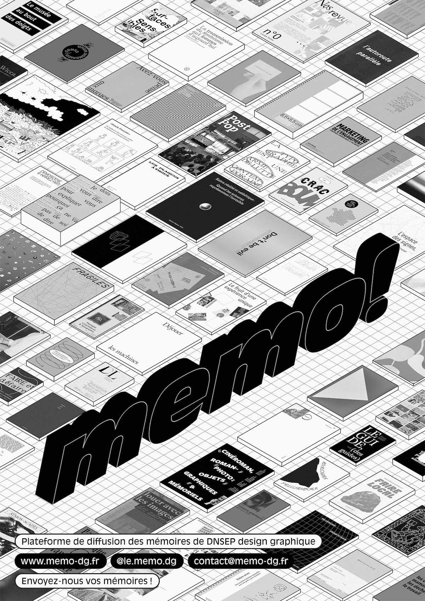

— Né de notre initiative, memo! est une plateforme de diffusion des mémoires de DNSEP design graphique. Ce site a pour but de valoriser la recherche étudiante dans le champ du design graphique en France. Le site est consulté par d'autres étudiants qui sont en cours d'écriture de leur mémoire, mais aussi par des professeurs qui ont suivi l'écriture.
